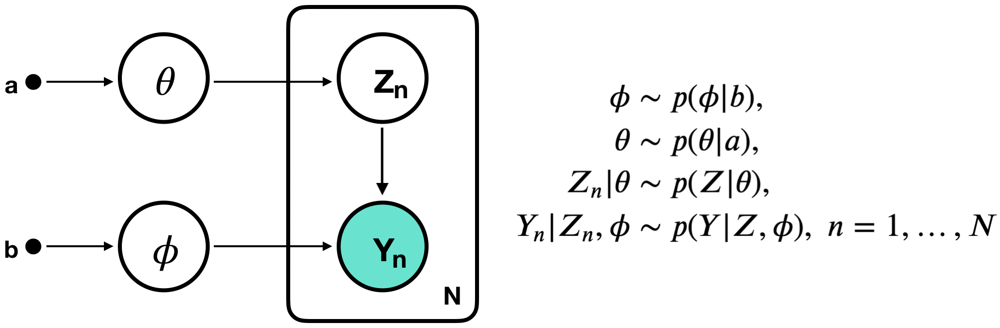
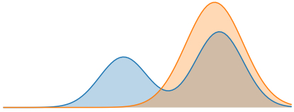
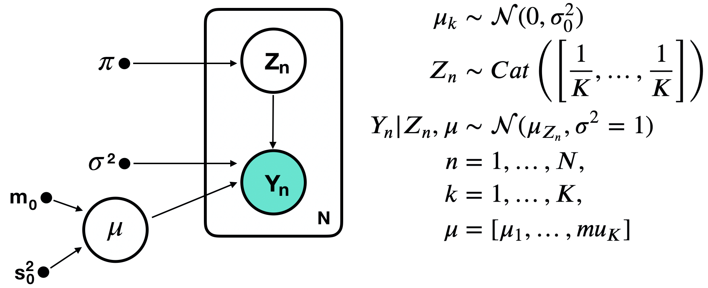
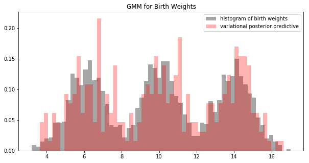
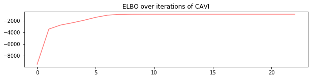

12. Bayesian Latent Variable Models and Variational Inference#
This chapter is adapted from AM207 (Harvard, Fall 2021). Watch the recorded lecture.
In this chapter
Bayesian Latent Variable Models
Coordinate Ascent Variational Inference
Bayesian Gaussian Mixture Models
12.1. Bayesian Latent Variable Models#
Overfitting is an always a concern when using MLE model parameters. We can mitigate the effect of outliers in the data on the model we learn by treating the parameters as random variables and placing priors on them.
In a latent variable model, maximum liklihood inference treats parameters \(\theta\), \(\phi\) as unknown constants and produces point-estimates for them. In a Bayesian latent variable model, \(\theta\), \(\phi\) are random variables and we derive the posterior distribution over them.


That is, we want to infer
Challenges in Bayesian Inference#
Unfortunately, most Bayesian models with multiple types of random variables (like Bayesian latent variable models) have complex posteriors that do not match known distributions. Exact inference is not possible.
Sampling from the posterior may not always be the best option because:
Convergence of samplers may be slow (due to high dimensionality of the distribution or multimodality)
Samplers like Metropolis-Hastings requires evaluating the liklihood \(\prod_n p(Y_n | Z_n, \phi)\) in each iteration, if the observed data is large (\(N\) is in the millions), this computation is expensive.
The Idea of Variational Inference#
Idea: (Approximate Inferenec) Approximate the hard posterior \(p(\theta, \phi, Z_1, \ldots, Z_N|Y_1, \ldots, Y_N)\) with a distribution \(q\) that is easy to sample from (like a Gaussian). Any computation involving the posterior can now be done with \(q\).
This approximation of \(p(\theta, \phi, Z_1, \ldots, Z_N|Y_1, \ldots, Y_N)\) with a distribution \(q\) is called variational inference.


The Design of the Variational Objective#
Goal: given a target posterior distribution \(p(\psi | Y_1, \ldots, Y_N)\), \(\psi \in \mathbb{R}^I\) we want to find a distribution \(q(\psi |\lambda^*)\) in a family of distributions \(Q = \{q(\psi |\lambda) | \lambda \in \Lambda \}\) such that \(q(\psi |\lambda^*)\) best approximates \(p\).
Design Choices: we need to choose:
A. (Variational family) a family \(Q\) of candidate distributions for approximating \(p\). The members of \(Q\) are called the variational distributions.
Our Choice: we assume that the joint \(q(\psi)\) factorizes completely over each dimension of \(\psi\), i.e. \(q(\psi)= \prod_{i=1}^I q(\psi_i | \lambda_i)\). This is called the mean field assumption. What can go wrong with this design choice?
B. (Divergence measure) a divergence measure to quantify the difference between \(p\) and \(q\).
Our Choice:
Variational Inference as Optimization#
We now formalize variational inference for a target \(p(\psi)\): find \(q(\psi|\lambda^*)\) where
Recall that for EM, we had proved that minimizing the KL is equivalent to maximizing the ELBO (for which it is easier to compute the gradient). We will do the same here:
Thus, the variational objective can be rephrased as maximizing the \(ELBO\).
Gradients of the ELBO#
Unfortunately, the ELBO for variational inference of the posterior does not have easy gradients,
In particular, the issue is that the gradient taken is with respect to the parameter \(\psi\) of the distribution over which we are taking the expectation - i.e. we cannot push the gradient into the expectation.
Today we will maximize the \(ELBO\) using coordinate ascent (just as in the case of EM). But you’ll see that coordinate ascent variational inference requires that we perform model specific computations (often in closed form). This restrict the class of Bayesian models for which we can perform variational inference.
Two of the major development we will cover later in the semester address how to estimate this gradient efficiently and without bias.
Coordinate Ascent Variational Inference#
Going deeper: Aside
Maximizing the ELBO via Coordinate Ascent#
The coordinate ascent algorithm maximizes an objective function \(ELBO(\lambda)\) by iteratively maximizing over \(\lambda_i\), holding constant \(\lambda_{-i} = [\lambda_1\; \ldots\; \lambda_{i-1}\; \lambda_{i+1}\; \ldots\; \lambda_{I}]\).
The coordinate ascent variational inference algorithm: 0. Initialization: pick an intial value \(\lambda^{(0)}\)
Coordinate-wise maximization:
Repeat for \(j=1, \ldots, J\) iterations:
\(\quad\quad\) Cycle thru \(i=1, \ldots, I\) coordinates:
where \(\psi_{-i} = [\psi_1\; \ldots\; \psi_{i-1}\; \psi_{i+1}\; \ldots\; \psi_{I}]\).
Going deeper: Proof of the Update Rule for \(q(\psi_i | \lambda^{\text{new}}_i)\)
We want to show that \(q(\psi_i | \lambda^{*}_i) \propto \exp\left\{ \mathbb{E}_{\psi_{-i} \sim q(\phi_{-i} | \lambda_{-i})}\left[\log p(Y_1, \ldots, Y_N, \psi_i | \psi_{-i})\right]\right\}\), where
To maximize the \(ELBO\), we will
use the mean-field assumption to break up the expectation \(\mathbb{E}_{\psi \sim q(\psi|\lambda)}\) into an interated expectation \(\mathbb{E}_{\psi_i \sim q(\psi_i|\lambda_i)}\mathbb{E}_{\psi_{-i} \sim q(\psi_{-i}|\lambda_{-i})}\)
we will rewrite the outer expectation \(\mathbb{E}_{\psi_i \sim q(\psi_i|\lambda_i)}\) as a negative KL-divergence
we will maximize the negative KL-divergence by setting the two arguments of the divergence equal to each other
For the following, we will use the following notation:
Step 1: Show that \(\mathbb{E}_{\psi \sim q(\psi|\lambda)}[\ldots] = \mathbb{E}_{\psi_i \sim q(\psi_i|\lambda_i)}\left[\mathbb{E}_{\psi_{-i} \sim q(\psi_{-i}|\lambda_{-i})}[\ldots] \right]\) For step 1, we rewrite the ELBO:
Now we decompose the ELBO into terms containing \(\lambda_i\), over which we are going to optimize, and terms not containing \(\lambda_i\):
Note that we don’t need to consider the constant term when optimizing with respect to \(\lambda_i\).
Step 2: Show that \(\underset{\lambda_i}{\max}\mathbb{E}_{\psi_i \sim q(\psi_i|\lambda_i)}[\ldots] \equiv \underset{\lambda_i}{\min} D_{\text{KL}}[\ldots]\) We show that maximizing the \(ELBO\) with respect to \(\lambda_{i}\) is equivalent to minimizing a KL-divergence:
Step 3: Minimize the KL-divergence We see that
is minimized when
This is also exactly where the ELBO is maximized.
We can further rewrite the update rule for \( q(\psi_{i}|\lambda_{i})\) as:
The rational for rewriting the update for \(q(\psi_{i}|\lambda_{i})\) in terms of the joint \(p(Y_1, \ldots, Y_N, \psi)\) is that the joint is easy to compute.
Bayesian Gaussian Mixture Models#
Variational Inference for Bayesian Gaussian Mixture Models#
We consider a Bayesian model for a mixture of \(K\) number of univariate Gaussians:


The hyperparameters of the models are \(\pi, \sigma^2, m_0, s^2_0\), which are constants that must be selected prior to inference. For example, to simplify our computations we selected \(\pi = [1/K, \ldots, 1/K]\), \(m_0 = 0\), \(\sigma=1\).
We make the mean field assumption – that our variational posterior factorizes completely:
Going deeper: Coordinate Ascent Variational Inference Updates for Bayesian GMM
In coordinate ascent variational inference, we update the variational distribution for each variable in turn. For the Bayesian GMM this means:
where
Update rule for \(q(Z_n | \phi_n)\) To update \(q(Z_n | \phi_n)\), we rewrite \(exp\left\{ \mathbb{E}_{\mu \sim q(\mu | m, s^2), Z_{-n} \sim q(Z_{-n} | \phi_{-n})}\left[\log p(Y_1, \ldots, Y_N, Z_1, \ldots, Z_N, \mu)\right]\right\}\), dropping all terms that do not involve \(Z_n\) and \(\mu\):
The likelihood \(p(Y_n | \mu, Z_n)\) is a normal distribution given the value of \(Z_n\), we can express this by treating each \(Z_n\) as an indicator variable – a \(K\)-dimensional binary vector with \(Z_{nk}=1\) if \(Y_n\) is in class \(k\) and 0 otherwise. Thus, we can write
Finally, we can write the update for \(q(Z_n | \phi_n)\) as follows, again dropping all terms not involving \(Z_n\) and \(\mu\):
Since \(q(Z_n | \phi_n)\) is a categorical distribution, we can use the above to compute the \(k\)-th component as:
Update rule for \(q(\mu_k | m_k, s_k^2)\) To update \(q(\mu_k | m_k, s_k^2)\), we compute:
Thus, we see that \(q(\mu_k | m_k, s_k^2) \propto \exp\left\{ - B\left(\mu_k^2 - \frac{A}{2B}\right)^2\right\} \) is a Gaussian with mean
and variance
Implemenation of CAVI for Bayesian GMM#
fig, ax = plt.subplots(1, 1, figsize=(10, 5))
ax.hist(y, bins=60, density=True, color='gray', alpha=0.7, label='histogram of birth weights')
posterior_predictive_samples = posterior_predictive_sampling(m_current, s_sq_current, 100)
ax.hist(posterior_predictive_samples, bins=60, density=True, color='red', alpha=0.3, label='variational posterior predictive')
ax.set_title('GMM for Birth Weights')
ax.legend(loc='best')
plt.show()

Sanity Check: ELBO During Training#
Remember that ploting the posterior predictive against actual data is not always an option (e.g. high-dimensional data).
A sanity check for that your CAVI algorithm has been implemented correctly is to plot the ELBO (or alternatively, the observed data log-likelihood) over the iterations of the algorithm:
fig, ax = plt.subplots(1, 1, figsize=(10, 2))
ax.plot(range(len(ELBOs)), ELBOs, color='red', alpha=0.5)
ax.set_title('ELBO over iterations of CAVI')
plt.show()

12.2. Exercises#
These problems were originally assigned as homework. Data files are in the book’s data/ folder.
Problem Set: Understanding EM and Variational Inference#
In this problem, we will draw concrete connections between EM and variational inference by applying both methods to a certain class of latent variable models. You’ll need to refer to relevant lecture notes on the derivations of EM and the derivation of the variational inference objective. This is an essay question that requires you to engage with complex derivations at a productive but still high level. No implementation is required.
Non-Bayesian Latent Variable Model#
Recall the class of latent variable models we studied in lecture:

Bayesian Latent Variable Model#
A Bayesian version of the same class of models involve adding priors for the model parameters:
(Comparing ELBOs) For the above type of Bayesian latent variable model, write down the ELBO for variational inference with a mean field variational family. Compare the variational inference ELBO for the Bayesian model to the expectation maximization ELBO for the non-Bayesian model. What are the differences and similarities between these two ELBOs?
In both EM and variational inference we optimize the ELBO. Compare the update steps in EM to the update steps in Coordinate Ascent Variational Inference, draw a concrete analogy between them.
Hint: To make both ELBO’s comparable, make sure that both are in terms of \(z, y, \theta, \phi\).
(Comparing ELBOs and KL-divergences) Recall that the original objective of variational inference is to minimize a KL-divergence, we rewrote the objective to be that of maximizing the ELBO. Why is directly minimizing the KL-divergence in the original objective difficult (be specific about wherein the difficulty lies)?
In the derivation of the E-step of EM, we reframed an maximization of the ELBO problem as a minimization of a KL-divergence problem. In this case, why was the KL-divergence easier to minimize and the ELBO harder to maximize (use the instantiation of the E-step for Gaussian Mixture Models in Lecture 7 to help support your answer)?
In the notes for Lecture 8, we introduce a way to maximize the variational inference ELBO – through coordinate ascent. In the derivation of the updates for coordinate ascent, there is a place where we reframed an maximization of the ELBO problem as an equivalent minimization of a KL-divergence problem. Write down the exact form of this equivalence (the two expressions are separated in the derivation by a bunch of lines, you’ll need to identify both parts that you need). In this case, why was the KL-divergence easier to minimize and the ELBO harder to maximization (use the instantiation of the update for Gaussian Mixture Models in Lecture 8 to help support your answer)?
Based on this analysis, can you draw some general conclusions about when we’d prefer to minimize the KL-divergence versus when we’d prefer to maximize the ELBO?
(The Mean Field Assumption and Coordinate Ascent) Describe exactly when and how the mean field assumption is used in the derivation of the coordinate ascent updates.
(Generalizability of CAVI) Summarize what kind of derivations/math is needed in order instantiate Coordinate Ascent Variational Inference (CAVI) for a given new model (look at what we did for Gaussian Mixture Models in Lecture 8 and predict what you’d need to do for a new model). Based on this, discuss the potential draw backs of using CAVI for Bayesian inference in general. What do these draw backs imply about the practicality of variational inference as an inference method?
(Generalizability of EM) Summarize what kind of derivations/math is needed in order instantiate Expectation Maximization (EM) for a given new model (look at what we did for Gaussian Mixture Models in Lecture 9 and predict what you’d need to do for a new model). Based on this, discuss the potential draw backs of using EM for MLE inference in general. What do these draw backs imply about the practicality of EM as an inference method?
12.3. Further Reading#
Variational Inference
(Introductory) Coordinate Ascent Mean-field Variational Inference (Univariate Gaussian Example)
(In-Depth) Variational Inference: A Review for Statisticians
(Introductory) Kullback-Leibler divergence